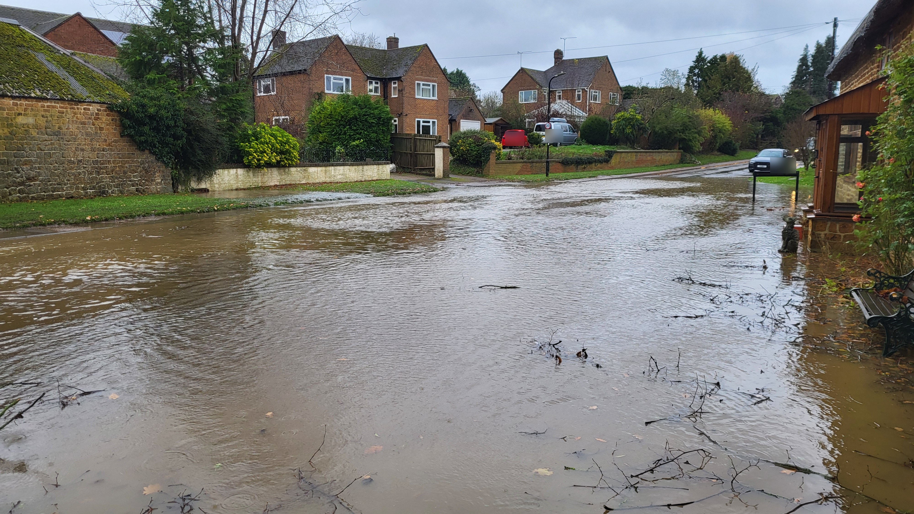
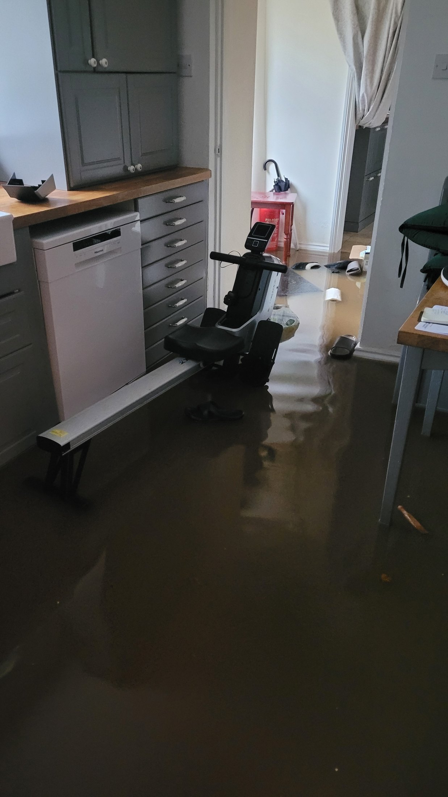
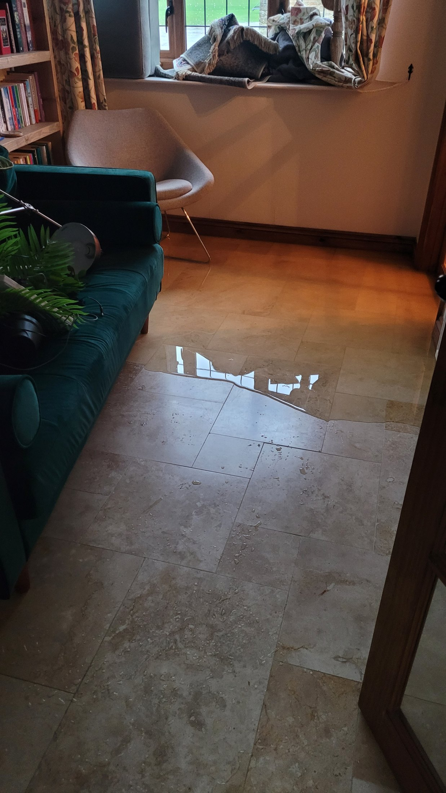
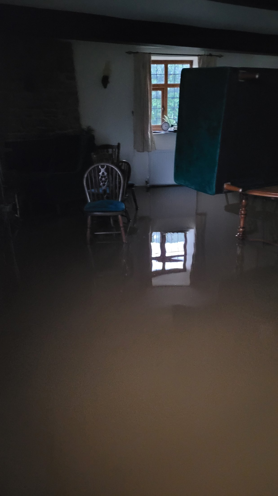
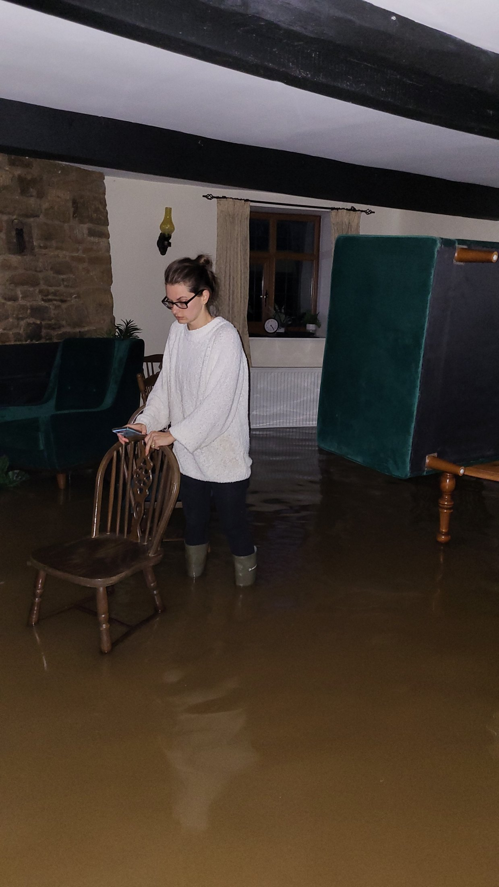
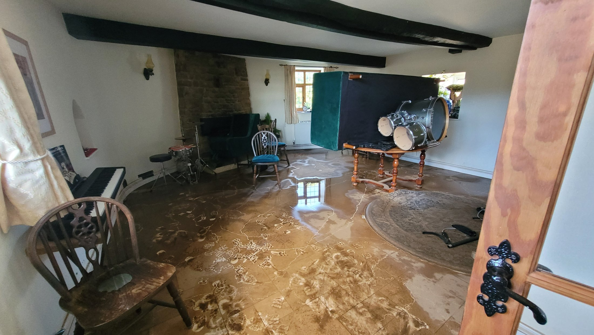
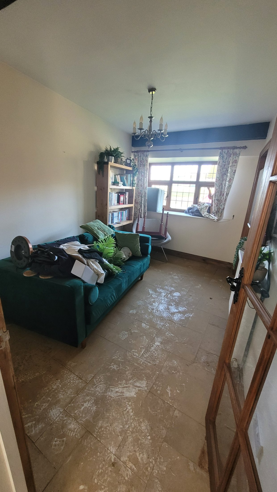
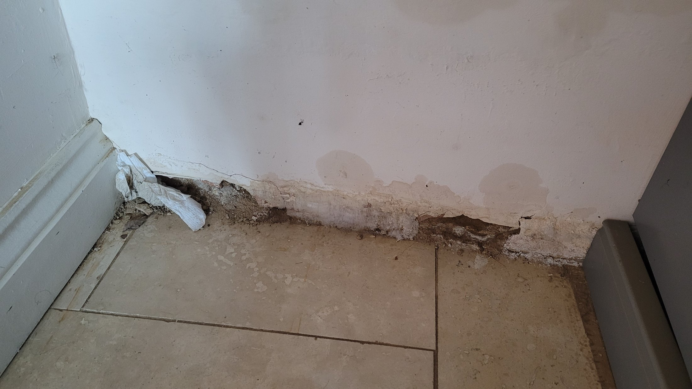
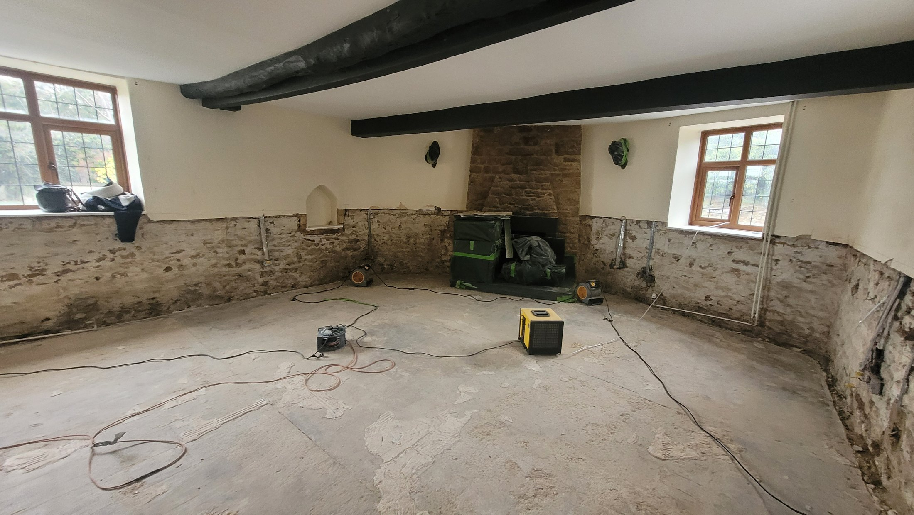
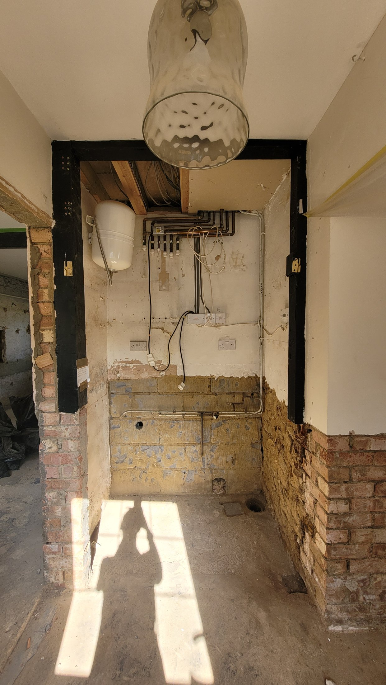

Flooding outside the property
Floodwater covering the road during Storm Bert. Vehicle registration details have been obscured for privacy.
Community evidence
A curated visual record of Storm Bert, its immediate aftermath and the long process of drying, repair and reinstatement.
Curated media record. These are selected from the larger community archive to show the story clearly without publishing repetitive insurance-style evidence. Vehicle registration details in the principal street photograph have been obscured. The resident shown below has given permission for the photograph to be published.
Floodwater spread across the road and entered the property, moving through ground-floor rooms. The photographs and clips show both depth and movement.

Floodwater covering the road during Storm Bert. Vehicle registration details have been obscured for privacy.

Floodwater inside the kitchen as the event developed.

Water moving beyond the initial point of entry.

The extent of flooding across the ground floor.

A resident inside the flooded property.
Video evidence of the event as water moved through the area.
A closer view of water movement during the storm.

Mud, contamination and drying equipment show how recovery begins only after the visible flood has gone.

The condition of the property in the days after Storm Bert.
Video evidence recorded during the immediate recovery period.

Visible damage weeks after the original flood.

Walls stripped back as part of the long remedial process.

Repair work months after Storm Bert demonstrates how long the consequences of a single flood can last.
Why keep this record? Photographs and video provide evidence of water depth, flow routes, property impact and recovery time. The full archive is retained separately; this page intentionally shows only the clearest and most useful material.